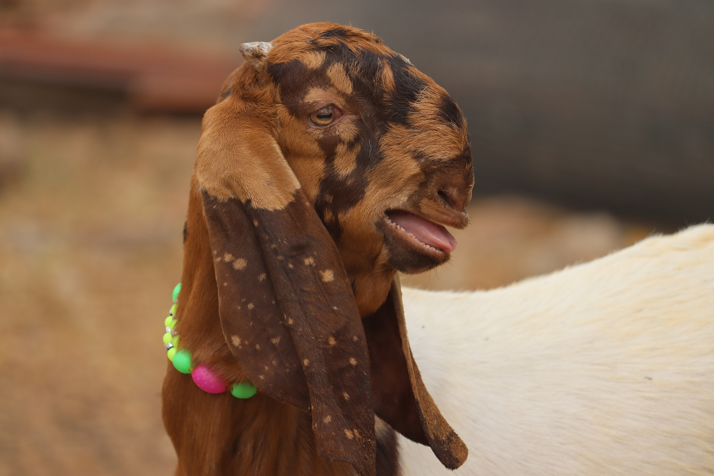

यह बकरी मुख्य रूप से दूध के लिए प्रसिद्ध है। यह हल्के भूरे रंग की होती है, लेकिन कुछ हल्के रंग भी हो सकते हैं। औसत रूप से सिरोही बकरी का वजन लगभग 40–60 किलोग्राम होता है। यह अच्छी मात्रा में दूध देती है, जो मुख्य रूप से घरेलू उपयोग के लिए उपयोगी होता है। यह बकरी शुष्क और अर्ध-शुष्क इलाकों में भी अच्छी तरह अनुकूल पाती है। इसका प्रजनन क्षमता भी अच्छी होती है, जिससे नए बच्चे भी जल्दी जन्म लेते हैं।

बकरी को बिमारियों से बचाने के लिए कुछ महत्वपूर्ण उपाय हैं: नियमित टीकाकरण: बकरी को प्रमुख बीमारियों से बचाने के लिए नियमित टीकाकरण करवाएं, जैसे पेस्ट्यूरलोसिस, ब्रूसेलोसिस आदि के खिलाफ। स्वच्छता का ध्यान रखें: बकरी के आश्रय और चराई वाली जगहें सफाई से रखें, गंदगी और कीड़ों से बचाएं। संतुलित आहार: बकरी को पौष्टिक और संतुलित आहार दें, जिससे उसकी सेहत मजबूत रहे। रोग नियंत्रण: बकरी को नियमित रूप से जांचें और किसी भी लक्षण या संक्रमण की पहचान होने पर तुरंत उपचार करें। परजीवी नियंत्रण: बकरी को परजीवियों से बचाने के लिए नियमित रूप से डी-वॉर्मिंग करें। इन उपायों को अपनाने से बकरी की सेहत अच्छी रहती है और बिमारियों से बचाव होता है।
बकरियों को सुरक्षित स्थान बनाने के लिए कुछ मुख्यबिंदुओं का ध्यान रखना जरूरी है। पहला, बाड़ या बाड़ा मजबूत और ऊँचा होना चाहिए, ताकि बकरियाँ अंदर सुरक्षित रहें। दूसरा, बकरियों को चरने के लिए हरा-भरा और स्वच्छ इलाका दें, जहाँ घास और पानी आसानी से उपलब्ध हो। तीसरा, छाया और सुरक्षित आश्रय की व्यवस्था करें ताकि वे खराब मौसम या धूप से सुरक्षित रह सकें। चौथा, नियमित रूप से स्वास्थ्य जाँच और टीकाकरण भी करते रहना चाहिए। इन बिंदुओं का पालन करने से बकरियाँ स्वस्थ और सुरक्षित रहेंगी।